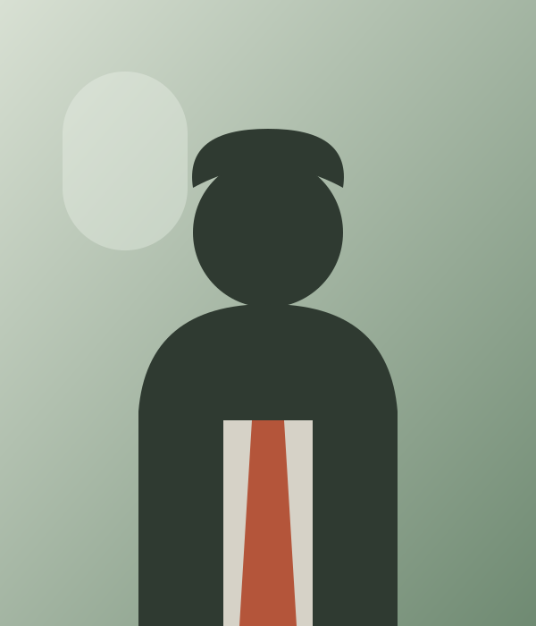

1972
Perjalanan Kembali
Haji Ahmad dan Hajjah Siti menikah dan hijrah ke Bandung. Mereka tinggal di kamar sewa sambil menunggu kabar tentang kedatangan anak pertama.
Linimasa
Tidak ada garis lurus dalam keluarga ini. Ada naik, ada turun, dan selalu ada meja makan yang menunggu di ujung.
Linimasa Keluarga
Haji Ahmad dan Hajjah Siti menikah dan hijrah ke Bandung. Mereka tinggal di kamar sewa sambil menunggu kabar tentang kedatangan anak pertama.
Sebuah rumah sederhana dengan dua kamar dan satu halaman. Halaman itu menjadi tempat menjemur pakaian dan selesai semua perdebatan.
Anak pertama pasangan itu. Suara tangisan pada pukul tiga pagi menjadi alarm paling awal keluarga ini.
Berusaha berjualan material bangunan. Gagal dua kali karena tidak punya modal, gagal ketiga kali karena salah memilih pasar. Berhasil pada percobaan keempat, dengan modal pinjaman tetangga.
Anak kedua, dan masa kecilnya penuh gendang. Sejak saat itu rumah tidak pernah sepi pada hari besar.
Liburan pertama bersama empat orang. Sekarang, semua orang mengaku bahwa dialah yang membawa alat masak.
Anak pertama berdiri di kaki sendiri. Membuka toko di pasar yang sama, dengan modal yang dikumpulkan dari seluruh keluarga.
Hajatan pertama yang dirayakan dengan cara modern. Seluruh keluarga tetap hadir, dan meja di belakang tetap jadi yang paling ramai.
Generasi keempat masuk ke dalam keluarga. Semua orang bilang dia punya mata Hajjah Siti.
Site web ini dibuat. Bukan karena album sudah lengkap, tapi karena cerita ini layak dicatat untuk dibaca cucu-cucunya.

“Kerja itu berat, tapi sendirian lebih berat lagi.”
Usman KamalCerita Meja Makan
Kenangan keluarga jarang disimpan dalam album pernikahan. Mereka hidup pada hal-hal kecil: satu resep, satu lagu, dan cara tertawa seseorang yang khas.
Tertua dan Termuda
“Dulu saya pikir rumah itu besar. Ternyata yang besar itu yang kita kumpulkan, bukan dindingnya.”
“Nenek selalu berkata hal yang sama: tidak ada keluarga yang terlalu besar untuk berkumpul.”
Lanjutkan Cerita
Setiap hajatan punya satu sudut yang hanya bisa diceritakan oleh orang yang hadir. Kirimkan cerita Anda.